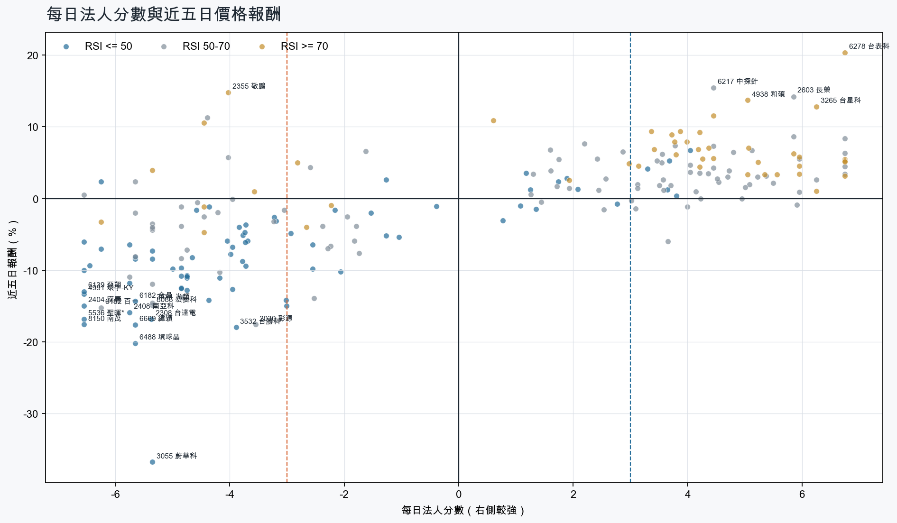
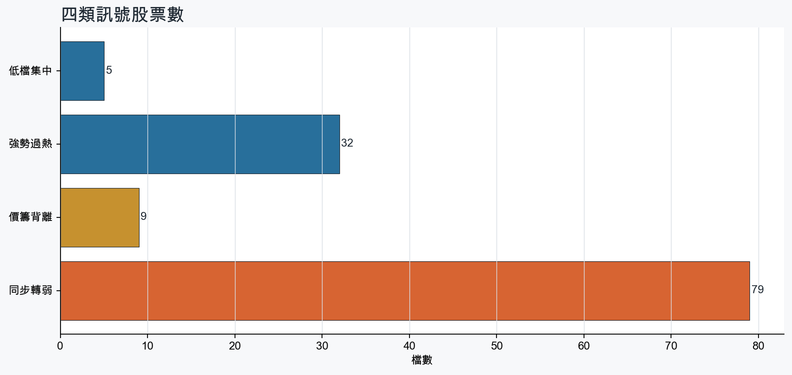
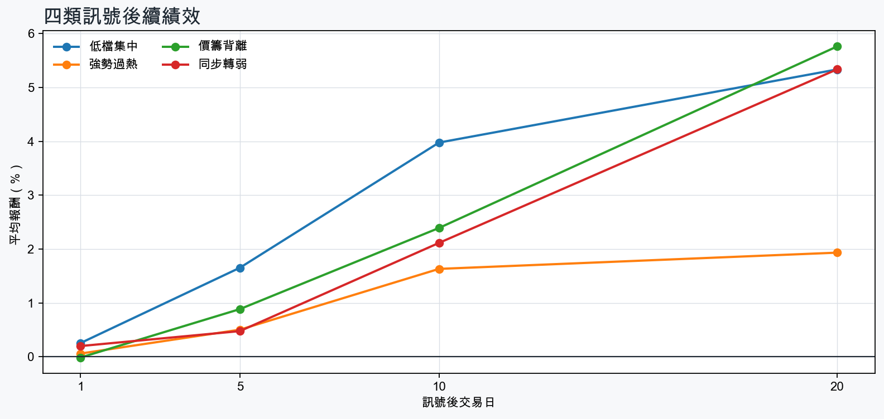

市場情緒偏空
近5日法人合計-8,496,297 張
篩選池上漲比例49.5%
籌碼好 / RSI低5 檔
籌碼差 / 價跌15 檔



EPS × PE VALUATION
法人常用的相對估值
顯示保守、基準與樂觀估值帶，不把單一數字包裝成精準目標價。
最新累計 EPS 依季數年化 × 同產業有效 P/E 的 Q25／中位數／Q75。排除本公司、非正 P/E，並以 1.5×IQR 排除離群值。估值帶是公開資料篩選值，不是法人目標價；未使用分析師預估 EPS。
MOOD × MONEY
情緒與籌碼雷達
熱度代表被討論程度；情緒分與法人方向分開計算。熱門不等於適合追價，樣本不足也不硬判多空。
| 股票 | 情緒 | 討論熱度 | 情緒 × 籌碼 | 情緒 × 基本面 |
|---|---|---|---|---|
| 2412 中華電強勢過熱 | 情緒高漲 +41.7信心 75 | 1002 篇 / 357 留言 / 0 則新聞 | 情籌共振法人分 +4.2 | 基本面與情緒共振基本面分 +3.6 |
| 2408 南亞科同步轉弱 | 偏空 -19.0信心 95 | 1006 篇 / 325 留言 / 2 則新聞 | 情籌混合法人分 -5.8 | 基本面與情緒分歧基本面分 +3.6 |
| 1216 統一強勢過熱 | 情緒高漲 +64.9信心 100 | 862 篇 / 142 留言 / 3 則新聞 | 情籌共振法人分 +6.8 | 基本面與情緒共振基本面分 +1.8 |
| 2308 台達電同步轉弱 | 情緒高漲 +49.5信心 100 | 862 篇 / 135 留言 / 3 則新聞 | 熱門但法人撤退法人分 -5.4 | 基本面與情緒共振基本面分 +3.6 |
| 0056 元大高股息價籌背離 | 情緒高漲 +58.7信心 59 | 831 篇 / 131 留言 / 0 則新聞 | 熱門但法人撤退法人分 -6.5 | 基本面與情緒分歧基本面分 +0.0 |
| 2027 大成鋼強勢過熱 | 中性分歧 -7.6信心 76 | 791 篇 / 92 留言 / 2 則新聞 | 高熱分歧法人分 +6.8 | 基本面與情緒分歧基本面分 +3.6 |
| 1301 台塑價籌背離 | 中性分歧 +10.4信心 90 | 712 篇 / 45 留言 / 3 則新聞 | 高熱分歧法人分 -3.6 | 基本面與情緒分歧基本面分 +1.1 |
| 2883 凱基金低檔集中 | 情緒高漲 +90.2信心 90 | 702 篇 / 39 留言 / 3 則新聞 | 情籌共振法人分 +3.3 | 基本面與情緒分歧基本面分 +0.8 |
| 6669 緯穎同步轉弱 | 中性分歧 +0.0信心 68 | 701 篇 / 45 留言 / 3 則新聞 | 高熱分歧法人分 -5.7 | 基本面與情緒分歧基本面分 +3.0 |
| 2360 致茂同步轉弱 | 情緒低迷 -35.6信心 79 | 642 篇 / 23 留言 / 3 則新聞 | 情籌雙弱法人分 -4.4 | 基本面佳、情緒悲觀基本面分 +3.6 |
| 3265 台星科強勢過熱 | 情緒高漲 +70.1信心 70 | 641 篇 / 29 留言 / 3 則新聞 | 情籌共振法人分 +6.2 | 基本面與情緒共振基本面分 +3.6 |
| 6278 台表科強勢過熱 | 偏多 +28.8信心 63 | 611 篇 / 20 留言 / 3 則新聞 | 情籌共振法人分 +6.8 | 基本面與情緒共振基本面分 +2.4 |
01
籌碼好 / RSI低
優先研究基本面；法人續買且價格止穩時，才適合分批觀察。
| 股票 / 確認狀態 | 每日法人分 | 浦男式近似 | 法人加速度 | RSI / 相對強弱 | 量價確認 | 融資融券 | 每週集保確認 | 基本面 | EPS × 同業 P/E 估值 | 情緒 / 情籌 | 近期消息 | 論壇討論 |
|---|---|---|---|---|---|---|---|---|---|---|---|---|
| 3605 宏致等待確認 · 79 分籌碼有訊號，但價格尚未確認 | +4.0法人 +3,353 張 / 2 天 | 接近 · 78站上月線；中期均線偏多；法人籌碼偏多；留意法人買盤未加速、買超延續不足 | -3,792 張近3日 -424 / 連續 -1 日 | 46.4相對大盤 +33.0% | 量比 0.49確認分 +1.1成交量不足；法人買盤減速 | -%融資 - 張 / 融券 - 張 | -0.12 pp1000張 -0.07 pp | 單月營收年增 +22.7%；累計營收年增 +17.8%；2026 Q2 累計 EPS 1.892026 Q2 累計營益率 6.4%來源：公開資訊觀測站 | 基準 NT$ 103.5估值帶 68.12–171.0現價 174.0 · 高於估值帶 · 距基準 -40.5%2026 Q2 累計 EPS 1.89 → 年化 3.78電子零組件同業 P/E 18.02／27.38／45.23 · n=148 · 信心中等以 Q2 累計 EPS 年化，不等同分析師全年預估來源：TWSE／TPEx 每日本益比 | 中性分歧 +0.0熱度 33 / 信心 20情籌混合 | 《電零組》注意股：宏致 近5日漲4.79%富聯網 · 10/16宏致9月營收11.81億元創新高 股價表現亮眼經濟日報 · 10/12 | 近期沒有明確提及本股的論壇樣本 |
| 9910 豐泰可研究 · 86 分籌碼與價格確認，可列研究清單 | +3.7法人 +4,261 張 / 5 天 | 接近 · 71站上月線；法人籌碼偏多；法人買盤加速；留意中期均線未翻多、相對強度普通 | +2,617 張近3日 +3,423 / 連續 +5 日 | 48.6相對大盤 -1.5% | 量比 2.36確認分 +4.120日線低於60日線 | -%融資 - 張 / 融券 - 張 | -0.30 pp1000張 +0.19 pp | 2026 Q2 累計 EPS 1.71單月營收年增 -4.8%；累計營收年增 -3.1%；2026 Q2 累計營益率 5.0%來源：公開資訊觀測站 | 基準 NT$ 40.83估值帶 32.87–50.68現價 69.80 · 高於估值帶 · 距基準 -41.5%2026 Q2 累計 EPS 1.71 → 年化 3.42運動休閒同業 P/E 9.61／11.94／14.82 · n=20 · 信心中等以 Q2 累計 EPS 年化，不等同分析師全年預估來源：TWSE／TPEx 每日本益比 | 樣本不足 -9.9熱度 23 / 信心 10情緒樣本不足 | 《投信賣超6-6》豐泰(108)、光寶科(104)富聯網 · 10/16 | 近期沒有明確提及本股的論壇樣本 |
| 2646 星宇航空可研究 · 75 分籌碼與價格確認，可列研究清單 | +3.6法人 +6,795 張 / 5 天 | 接近 · 75站上月線；法人籌碼偏多；法人買盤加速；留意中期均線未翻多、相對強度普通 | +2,708 張近3日 +4,996 / 連續 +6 日 | 50.0相對大盤 -2.3% | 量比 1.16確認分 +1.620日線低於60日線 | -%融資 - 張 / 融券 - 張 | -0.28 pp1000張 -0.21 pp | 單月營收年增 +68.9%；累計營收年增 +37.1%2026 Q2 累計 EPS -0.11；2026 Q2 累計營益率 1.8%來源：公開資訊觀測站 | 不適用年化 EPS 非正數，不適合使用本益比估值 | 中性分歧 +0.0熱度 39 / 信心 30情籌混合 | 星宇航空9月營收亮眼，Q4客/貨運看正面Yahoo股市 · 10/13星宇航空營收／9月49.7億元、年增68% 前三季448億元經濟日報 · 10/12 | 近期沒有明確提及本股的論壇樣本 |
| 2606 裕民等待確認 · 63 分籌碼有訊號，但價格尚未確認 | +3.8法人 +4,147 張 / 4 天 | 接近 · 72中期均線偏多；法人籌碼偏多；買超具延續性；留意未站月線、法人買盤未加速 | -2,979 張近3日 +919 / 連續 -1 日 | 45.3相對大盤 -2.7% | 量比 1.00確認分 -2.2收盤跌破20日線；法人買盤減速 | -%融資 - 張 / 融券 - 張 | -0.52 pp1000張 -0.13 pp | 單月營收年增 +25.7%；累計營收年增 +25.2%；2026 Q2 累計 EPS 3.51仍需觀察下一期財報延續性來源：公開資訊觀測站 | 基準 NT$ 80.45估值帶 65.36–102.1現價 75.20 · 估值帶內 · 距基準 +7.0%2026 Q2 累計 EPS 3.51 → 年化 7.02航運業同業 P/E 9.31／11.46／14.54 · n=26 · 信心中等以 Q2 累計 EPS 年化，不等同分析師全年預估來源：TWSE／TPEx 每日本益比 | 樣本不足 +0.0熱度 0 / 信心 0情緒樣本不足 | 近期沒有通過股票語境篩選的新聞 | 近期沒有明確提及本股的論壇樣本 |
| 2883 凱基金可研究 · 75 分籌碼與價格確認，可列研究清單 | +3.3法人 +61,559 張 / 4 天 | 接近 · 74站上月線；中期均線偏多；法人籌碼偏多；留意法人買盤未加速、相對強度普通 | -1,621 張近3日 +25,471 / 連續 +2 日 | 48.3相對大盤 -1.0% | 量比 1.03確認分 +2.1法人買盤減速 | -%融資 - 張 / 融券 - 張 | -0.08 pp1000張 -0.02 pp | 2026 Q2 累計 EPS 1.64仍需觀察下一期財報延續性來源：公開資訊觀測站 | 基準 NT$ 43.53估值帶 23.19–52.94現價 39.10 · 估值帶內 · 距基準 +11.3%2026 Q2 累計 EPS 1.64 → 年化 3.28金融保險同業 P/E 7.07／13.27／16.14 · n=39 · 信心中等以 Q2 累計 EPS 年化，不等同分析師全年預估來源：TWSE／TPEx 每日本益比 | 情緒高漲 +90.2熱度 70 / 信心 90情籌共振 | 72萬股東哭哭！凱基金9月獲利月減54% 前三季EPS2.26元仍賺贏去年全年Yahoo股市 · 10/14凱基金前3季獲利389億元 加計FVOCI利益達936億 續創同期新高自由財經 · 10/14 | [情報] 1802 台玻賣凱基金10,000張賺212,827仟元PTT Stock · 10-14 · 23 留言[新聞] 凱基金獲利／前三季389億元、EPS 2.26元PTT Stock · 10-14 · 16 留言 |
02
籌碼好 / RSI高
趨勢強但不追價，等待量縮、RSI降溫或回測支撐。
| 股票 / 確認狀態 | 每日法人分 | 浦男式近似 | 法人加速度 | RSI / 相對強弱 | 量價確認 | 融資融券 | 每週集保確認 | 基本面 | EPS × 同業 P/E 估值 | 情緒 / 情籌 | 近期消息 | 論壇討論 |
|---|---|---|---|---|---|---|---|---|---|---|---|---|
| 6278 台表科等待拉回 · 100 分等拉回，不追價 | +6.8法人 +26,430 張 / 5 天 | 接近 · 90站上月線；中期均線偏多；法人籌碼偏多；留意RSI過熱 | +915 張近3日 +15,977 / 連續 +10 日 | 86.2相對大盤 +61.9% | 量比 2.48確認分 +6.5價格、量能與籌碼未見明顯弱項 | -%融資 - 張 / 融券 - 張 | +6.42 pp1000張 +4.90 pp | 單月營收年增 +15.9%；累計營收年增 +6.5%；2026 Q2 累計 EPS 4.932026 Q2 累計營益率 6.0%來源：公開資訊觀測站 | 基準 NT$ 236.5估值帶 123.9–366.8現價 298.5 · 估值帶內 · 距基準 -20.8%2026 Q2 累計 EPS 4.93 → 年化 9.86光電同業 P/E 12.57／23.99／37.20 · n=68 · 信心中等以 Q2 累計 EPS 年化，不等同分析師全年預估來源：TWSE／TPEx 每日本益比 | 偏多 +28.8熱度 61 / 信心 63情籌共振 | 6278 台表科 - 499快快來📈 - 股市爆料同學會CMoney · 10/166278 台表科- 買在313 請求大神主力幫忙謝謝- 股市爆料同學會CMoney · 10/16 | [情報] 6278 台表科 9月自結:1.31 年增:47.19%PTT Stock · 10-15 · 20 留言 |
| 2027 大成鋼等待拉回 · 100 分等拉回，不追價 | +6.8法人 +27,568 張 / 5 天 | 接近 · 90站上月線；中期均線偏多；法人籌碼偏多；留意RSI過熱 | +13,504 張近3日 +22,749 / 連續 +8 日 | 79.5相對大盤 +9.6% | 量比 1.62確認分 +6.5價格、量能與籌碼未見明顯弱項 | -%融資 - 張 / 融券 - 張 | -0.08 pp1000張 -0.18 pp | 單月營收年增 +41.1%；累計營收年增 +35.0%；2026 Q2 累計 EPS 3.10仍需觀察下一期財報延續性來源：公開資訊觀測站 | 基準 NT$ 78.99估值帶 66.34–97.22現價 50.90 · 低於估值帶 · 距基準 +55.2%2026 Q2 累計 EPS 3.10 → 年化 6.20鋼鐵工業同業 P/E 10.70／12.74／15.68 · n=27 · 信心中等以 Q2 累計 EPS 年化，不等同分析師全年預估來源：TWSE／TPEx 每日本益比 | 中性分歧 -7.6熱度 79 / 信心 76高熱分歧 | 《投信賣超6-2》凱基金(2235)、華南金(2065)、中信金(2027)富聯網 · 10/16今日最夯股／大成鋼量增收紅 三大法人齊買是為什麼？ | 市場焦點 | 證券經濟日報 · 09/24 | [新聞] 2027年AI迎轉折？谷月涵：電力缺口恐成瓶頸PTT Stock · 10-14 · 92 留言 |
| 8213 志超等待拉回 · 100 分等拉回，不追價 | +6.2法人 +3,456 張 / 5 天 | 命中 · 91站上月線；中期均線偏多；法人籌碼偏多；留意量能尚未確認、動能位置非最佳 | +753 張近3日 +2,368 / 連續 +10 日 | 71.2相對大盤 +16.4% | 量比 0.86確認分 +5.8價格、量能與籌碼未見明顯弱項 | -%融資 - 張 / 融券 - 張 | +0.57 pp1000張 +1.66 pp | 單月營收年增 +50.6%；累計營收年增 +20.8%；2026 Q2 累計 EPS 0.932026 Q2 累計營益率 3.5%來源：公開資訊觀測站 | 基準 NT$ 51.43估值帶 33.52–84.91現價 38.75 · 估值帶內 · 距基準 +32.7%2026 Q2 累計 EPS 0.93 → 年化 1.86電子零組件同業 P/E 18.02／27.65／45.65 · n=148 · 信心中等以 Q2 累計 EPS 年化，不等同分析師全年預估來源：TWSE／TPEx 每日本益比 | 樣本不足 +0.0熱度 23 / 信心 10情緒樣本不足 | 【11:17 即時新聞】志超(8213)股價走強，量能與主力買盤成盤中焦點CMoney投資網誌 · 10/14 | 近期沒有明確提及本股的論壇樣本 |
| 6209 今國光等待拉回 · 100 分等拉回，不追價 | +4.5法人 +15,645 張 / 3 天 | 接近 · 80站上月線；中期均線偏多；法人籌碼偏多；留意量能異常、RSI過熱 | +12,120 張近3日 +13,141 / 連續 +2 日 | 87.6相對大盤 +29.4% | 量比 3.47確認分 +5.3價格、量能與籌碼未見明顯弱項 | -%融資 - 張 / 融券 - 張 | +6.16 pp1000張 +4.95 pp | 單月營收年增 +81.6%；累計營收年增 +71.4%；2026 Q2 累計 EPS 1.53仍需觀察下一期財報延續性來源：公開資訊觀測站 | 基準 NT$ 73.41估值帶 38.46–110.2現價 100.5 · 估值帶內 · 距基準 -27.0%2026 Q2 累計 EPS 1.53 → 年化 3.06光電同業 P/E 12.57／23.99／36.01 · n=68 · 信心中等以 Q2 累計 EPS 年化，不等同分析師全年預估來源：TWSE／TPEx 每日本益比 | 中性分歧 +0.0熱度 39 / 信心 30情籌混合 | 焦點股》今國光：遠紅外線需求旺 一度攻漲停自由財經 · 10/16〈焦點股〉今國光紅外線鏡頭推升營運走高 股價攻漲停102元鉅亨網 · 10/16 | 近期沒有明確提及本股的論壇樣本 |
| 3005 神基等待拉回 · 100 分等拉回，不追價 | +5.6法人 +5,647 張 / 5 天 | 命中 · 96站上月線；中期均線偏多；法人籌碼偏多；留意動能位置非最佳 | +2,685 張近3日 +4,236 / 連續 +6 日 | 75.0相對大盤 +3.0% | 量比 1.82確認分 +5.2價格、量能與籌碼未見明顯弱項 | -%融資 - 張 / 融券 - 張 | +0.35 pp1000張 +0.15 pp | 單月營收年增 +16.3%；累計營收年增 +10.7%；2026 Q2 累計 EPS 4.27仍需觀察下一期財報延續性來源：公開資訊觀測站 | 基準 NT$ 152.8估值帶 106.2–207.5現價 122.5 · 估值帶內 · 距基準 +24.7%2026 Q2 累計 EPS 4.27 → 年化 8.54電腦及週邊同業 P/E 12.44／17.89／24.30 · n=79 · 信心中等以 Q2 累計 EPS 年化，不等同分析師全年預估來源：TWSE／TPEx 每日本益比 | 樣本不足 +0.0熱度 0 / 信心 0情緒樣本不足 | 近期沒有通過股票語境篩選的新聞 | 近期沒有明確提及本股的論壇樣本 |
| 3265 台星科等待拉回 · 100 分等拉回，不追價 | +6.2法人 +6,082 張 / 5 天 | 接近 · 78站上月線；中期均線偏多；法人籌碼偏多；留意法人買盤未加速、量能尚未確認 | -5,094 張近3日 +482 / 連續 +5 日 | 81.1相對大盤 +64.1% | 量比 0.80確認分 +2.4法人買盤減速 | -7.8%融資 -338 張 / 融券 -116 張 | +3.21 pp1000張 +0.65 pp | 單月營收年增 +11.5%；累計營收年增 +15.9%；2026 Q2 累計 EPS 3.85仍需觀察下一期財報延續性來源：公開資訊觀測站 | 基準 NT$ 205.1估值帶 132.2–357.9現價 269.0 · 估值帶內 · 距基準 -23.7%2026 Q2 累計 EPS 3.85 → 年化 7.70半導體同業 P/E 17.17／26.64／46.48 · n=148 · 信心中等以 Q2 累計 EPS 年化，不等同分析師全年預估來源：TWSE／TPEx 每日本益比 | 情緒高漲 +70.1熱度 64 / 信心 70情籌共振 | 數十年首見！資本支出翻倍創新高日月光、京元電、欣銓、台星科…等8大封測廠預估獲利1表看法人只加碼2檔 - 上市櫃旺得富理財網 · 10/16台星科自結9月獲利年增119%，每股賺0.74元台視全球資訊網 · 10/15 | [情報] 3265 台星科 9月自結:0.74 年增:117.6%PTT Stock · 10-14 · 29 留言 |
| 5309 系統電等待拉回 · 100 分等拉回，不追價 | +4.5法人 +3,859 張 / 3 天 | 接近 · 86站上月線；中期均線偏多；法人籌碼偏多；留意RSI過熱 | +1,441 張近3日 +1,537 / 連續 +2 日 | 82.1相對大盤 +41.9% | 量比 1.86確認分 +6.5價格、量能與籌碼未見明顯弱項 | +3.3%融資 +454 張 / 融券 -41 張 | +5.08 pp1000張 +3.56 pp | 單月營收年增 +17.9%；累計營收年增 +10.4%；2026 Q2 累計 EPS 0.062026 Q2 累計營益率 -5.4%來源：公開資訊觀測站 | 基準 NT$ 3.29估值帶 2.16–5.43現價 71.60 · 高於估值帶 · 距基準 -95.4%2026 Q2 累計 EPS 0.06 → 年化 0.12電子零組件同業 P/E 18.02／27.38／45.23 · n=148 · 信心中等以 Q2 累計 EPS 年化，不等同分析師全年預估來源：TWSE／TPEx 每日本益比 | 中性分歧 +0.0熱度 33 / 信心 20情籌混合 | 【11:30 即時新聞】系統電(5309)盤中走強，市場聚焦BBU與營收新高CMoney投資網誌 · 10/16《上櫃盤後成交量前30名（6-3）》系統電(21282)富聯網 · 10/16 | 近期沒有明確提及本股的論壇樣本 |
| 4927 泰鼎-KY等待拉回 · 100 分等拉回，不追價 | +5.3法人 +6,189 張 / 4 天 | 接近 · 81站上月線；中期均線偏多；法人籌碼偏多；留意基本面偏弱、動能位置非最佳 | +2,753 張近3日 +4,589 / 連續 -1 日 | 74.9相對大盤 +36.3% | 量比 0.97確認分 +6.5價格、量能與籌碼未見明顯弱項 | -%融資 - 張 / 融券 - 張 | +5.83 pp1000張 +6.32 pp | 單月營收年增 +72.8%；累計營收年增 +9.7%2026 Q2 累計 EPS -5.46；2026 Q2 累計營益率 -22.8%來源：公開資訊觀測站 | 不適用年化 EPS 非正數，不適合使用本益比估值 | 中性分歧 +0.0熱度 33 / 信心 20情籌混合 | 4927 泰鼎-KY - 弱中透強60元頸線天劫！不是受難，而是『雷劫淬體』！ - 股市爆料同學會CMoney · 10/13【12:26 即時新聞】泰鼎-KY(4927)股價走強，主力與法人買盤延續成焦點CMoney投資網誌 · 10/12 | 近期沒有明確提及本股的論壇樣本 |
| 1477 聚陽等待拉回 · 100 分等拉回，不追價 | +6.0法人 +4,807 張 / 5 天 | 接近 · 80站上月線；法人籌碼偏多；法人買盤加速；留意中期均線未翻多、RSI過熱 | +2,352 張近3日 +3,954 / 連續 +10 日 | 82.5相對大盤 +6.4% | 量比 0.93確認分 +6.120日線低於60日線 | -%融資 - 張 / 融券 - 張 | -0.01 pp1000張 -0.41 pp | 單月營收年增 +24.0%；累計營收年增 +0.2%；2026 Q2 累計 EPS 7.65仍需觀察下一期財報延續性來源：公開資訊觀測站 | 基準 NT$ 200.3估值帶 158.8–291.8現價 211.0 · 估值帶內 · 距基準 -5.1%2026 Q2 累計 EPS 7.65 → 年化 15.30紡織纖維同業 P/E 10.38／13.09／19.07 · n=34 · 信心中等以 Q2 累計 EPS 年化，不等同分析師全年預估來源：TWSE／TPEx 每日本益比 | 偏多 +29.7熱度 39 / 信心 30情籌共振 | 聚陽擴產鎖定印尼/孟加拉，中東先採委外試水溫Yahoo股市 · 10/151477 聚陽- 聚陽Q4看正向，短單增、有利獲利動能- 股市爆料同學會CMoney · 10/15 | 近期沒有明確提及本股的論壇樣本 |
| 9904 寶成等待拉回 · 100 分等拉回，不追價 | +6.0法人 +50,880 張 / 5 天 | 命中 · 92站上月線；中期均線偏多；法人籌碼偏多；留意動能位置非最佳 | +4,198 張近3日 +30,853 / 連續 +8 日 | 75.0相對大盤 +5.8% | 量比 1.55確認分 +5.7價格、量能與籌碼未見明顯弱項 | -%融資 - 張 / 融券 - 張 | +0.21 pp1000張 +0.28 pp | 單月營收年增 +10.4%；2026 Q2 累計 EPS 2.37累計營收年增 -0.5%；2026 Q2 累計營益率 2.3%來源：公開資訊觀測站 | 基準 NT$ 60.62估值帶 51.19–70.72現價 26.50 · 低於估值帶 · 距基準 +128.8%2026 Q2 累計 EPS 2.37 → 年化 4.74運動休閒同業 P/E 10.80／12.79／14.92 · n=19 · 信心中等以 Q2 累計 EPS 年化，不等同分析師全年預估來源：TWSE／TPEx 每日本益比 | 中性分歧 +6.6熱度 33 / 信心 20情籌混合 | 寶成(9904) 10/16 三大法人買賣超CMoney · 10/169904 寶成- 寶成歐系客戶訂單穩定，拚下半年出貨回升- 股市爆料同學會CMoney · 10/16 | 近期沒有明確提及本股的論壇樣本 |
| 1216 統一等待拉回 · 100 分等拉回，不追價 | +6.8法人 +63,656 張 / 5 天 | 接近 · 82站上月線；法人籌碼偏多；法人買盤加速；留意中期均線未翻多、動能位置非最佳 | +25,969 張近3日 +48,371 / 連續 +8 日 | 70.6相對大盤 +3.3% | 量比 1.34確認分 +5.320日線低於60日線 | -%融資 - 張 / 融券 - 張 | -0.27 pp1000張 -0.32 pp | 單月營收年增 +5.8%；累計營收年增 +4.2%；2026 Q2 累計 EPS 2.562026 Q2 累計營益率 5.9%來源：公開資訊觀測站 | 基準 NT$ 79.46估值帶 62.46–98.56現價 79.60 · 估值帶內 · 距基準 -0.2%2026 Q2 累計 EPS 2.56 → 年化 5.12食品工業同業 P/E 12.20／15.52／19.25 · n=24 · 信心中等以 Q2 累計 EPS 年化，不等同分析師全年預估來源：TWSE／TPEx 每日本益比 | 情緒高漲 +64.9熱度 86 / 信心 100情籌共振 | 相關基金統一投信 · 10/16食品、零售雙引擎點火！統一連漲7天飆9.35%奪強勢股王法人估EPS連3季破1元、創至少2008年以來首見紀錄Yahoo股市 · 10/16 | [新聞] 統一集團營收 三喜臨門PTT Stock · 10-13 · 126 留言Re: [新聞] 統一集團營收 三喜臨門PTT Stock · 10-15 · 16 留言 |
| 4904 遠傳等待拉回 · 100 分等拉回，不追價 | +4.4法人 +14,656 張 / 5 天 | 命中 · 96站上月線；中期均線偏多；法人籌碼偏多；留意動能位置非最佳 | +5,767 張近3日 +10,438 / 連續 +8 日 | 75.0相對大盤 +3.1% | 量比 1.21確認分 +5.3價格、量能與籌碼未見明顯弱項 | -%融資 - 張 / 融券 - 張 | +0.07 pp1000張 +0.11 pp | 單月營收年增 +8.7%；累計營收年增 +11.0%；2026 Q2 累計 EPS 2.14仍需觀察下一期財報延續性來源：公開資訊觀測站 | 基準 NT$ 101.4估值帶 63.69–194.5現價 113.5 · 估值帶內 · 距基準 -10.7%2026 Q2 累計 EPS 2.14 → 年化 4.28通信網路同業 P/E 14.88／23.69／45.45 · n=60 · 信心中等以 Q2 累計 EPS 年化，不等同分析師全年預估來源：TWSE／TPEx 每日本益比 | 樣本不足 +0.0熱度 23 / 信心 10情緒樣本不足 | 今日最夯股／遠傳收盤創新高 為何法人持續看好？ | 市場焦點 | 證券經濟日報 · 10/15 | 近期沒有明確提及本股的論壇樣本 |
| 2412 中華電等待拉回 · 100 分等拉回，不追價 | +4.2法人 +28,284 張 / 5 天 | 接近 · 90站上月線；中期均線偏多；法人籌碼偏多；留意RSI過熱 | +10,954 張近3日 +21,025 / 連續 +10 日 | 80.0相對大盤 +3.1% | 量比 1.18確認分 +5.0價格、量能與籌碼未見明顯弱項 | -%融資 - 張 / 融券 - 張 | +0.54 pp1000張 +0.47 pp | 單月營收年增 +20.9%；累計營收年增 +10.8%；2026 Q2 累計 EPS 2.68仍需觀察下一期財報延續性來源：公開資訊觀測站 | 基準 NT$ 127.0估值帶 79.76–243.6現價 153.0 · 估值帶內 · 距基準 -17.0%2026 Q2 累計 EPS 2.68 → 年化 5.36通信網路同業 P/E 14.88／23.69／45.45 · n=60 · 信心中等以 Q2 累計 EPS 年化，不等同分析師全年預估來源：TWSE／TPEx 每日本益比 | 情緒高漲 +41.7熱度 100 / 信心 75情籌共振 | 近期沒有通過股票語境篩選的新聞 | [新聞] 中華電信工會今起罷工投票 全總批資方恐PTT Stock · 10-14 · 323 留言[新聞] 中華電信工會罷工投票遭質疑 勞動部：直PTT Stock · 10-14 · 34 留言 |
| 2377 微星等待拉回 · 100 分等拉回，不追價 | +6.0法人 +14,754 張 / 5 天 | 接近 · 81站上月線；中期均線偏多；法人籌碼偏多；留意量能尚未確認、RSI過熱 | +8,793 張近3日 +11,896 / 連續 +7 日 | 81.8相對大盤 +5.6% | 量比 2.65確認分 +5.2價格、量能與籌碼未見明顯弱項 | -%融資 - 張 / 融券 - 張 | +1.49 pp1000張 +1.33 pp | 單月營收年增 +1.8%；2026 Q2 累計 EPS 7.59累計營收年增 -5.5%；2026 Q2 累計營益率 6.7%來源：公開資訊觀測站 | 基準 NT$ 271.6估值帶 188.8–368.9現價 161.5 · 低於估值帶 · 距基準 +68.2%2026 Q2 累計 EPS 7.59 → 年化 15.18電腦及週邊同業 P/E 12.44／17.89／24.30 · n=79 · 信心中等以 Q2 累計 EPS 年化，不等同分析師全年預估來源：TWSE／TPEx 每日本益比 | 偏多 +19.8熱度 33 / 信心 20情籌混合 | 2377 微星 - 三角收斂日報10/16｜微星帶量表態！名單上還有誰在門口👀 - 股市爆料同學會CMoney · 10/16台灣加油！南電加油！微星加油！黃乾爹加油！再給台廠多多大訂單CMoney · 10/16 | 近期沒有明確提及本股的論壇樣本 |
| 2002 中鋼等待拉回 · 100 分等拉回，不追價 | +6.8法人 +170,455 張 / 5 天 | 接近 · 73站上月線；法人籌碼偏多；法人買盤加速；留意中期均線未翻多、基本面中性 | +73,476 張近3日 +127,202 / 連續 +6 日 | 70.5相對大盤 +1.3% | 量比 1.76確認分 +4.820日線低於60日線 | -%融資 - 張 / 融券 - 張 | -0.12 pp1000張 -0.20 pp | 單月營收年增 +27.1%；累計營收年增 +6.2%2026 Q2 累計 EPS -0.03；2026 Q2 累計營益率 1.8%來源：公開資訊觀測站 | 不適用年化 EPS 非正數，不適合使用本益比估值 | 樣本不足 +9.9熱度 23 / 信心 10情緒樣本不足 | 2002 中鋼- 上市外資買超一週以來排行- 股市爆料同學會CMoney · 10/16 | 近期沒有明確提及本股的論壇樣本 |
03
籌碼差 / 股價上漲
可能是事件行情或軋空；沒有籌碼改善前避免追高。
| 股票 / 確認狀態 | 每日法人分 | 浦男式近似 | 法人加速度 | RSI / 相對強弱 | 量價確認 | 融資融券 | 每週集保確認 | 基本面 | EPS × 同業 P/E 估值 | 情緒 / 情籌 | 近期消息 | 論壇討論 |
|---|---|---|---|---|---|---|---|---|---|---|---|---|
| 2355 敬鵬風險警示 · 57 分背離警戒，避免追高 | -4.0法人 -3,556 張 / 2 天 | 未命中 · 55站上月線；中期均線偏多；明顯強於大盤；留意法人籌碼偏弱、法人買盤未加速 | -122 張近3日 -1,676 / 連續 -1 日 | 81.0相對大盤 +24.9% | 量比 3.37確認分 +3.0法人買盤減速 | -%融資 - 張 / 融券 - 張 | +0.51 pp1000張 -0.46 pp | 單月營收年增 +44.3%；累計營收年增 +11.2%；2026 Q2 累計 EPS 1.072026 Q2 累計營益率 4.6%來源：公開資訊觀測站 | 基準 NT$ 59.17估值帶 38.56–97.69現價 51.90 · 估值帶內 · 距基準 +14.0%2026 Q2 累計 EPS 1.07 → 年化 2.14電子零組件同業 P/E 18.02／27.65／45.65 · n=148 · 信心中等以 Q2 累計 EPS 年化，不等同分析師全年預估來源：TWSE／TPEx 每日本益比 | 樣本不足 +0.0熱度 0 / 信心 0情緒樣本不足 | 近期沒有通過股票語境篩選的新聞 | 近期沒有明確提及本股的論壇樣本 |
| 6153 嘉聯益風險警示 · 37 分背離警戒，避免追高 | -4.4法人 -4,837 張 / 1 天 | 未命中 · 50站上月線；中期均線偏多；明顯強於大盤；留意法人籌碼偏弱、法人買盤未加速 | -4,869 張近3日 -5,234 / 連續 -4 日 | 65.5相對大盤 +10.4% | 量比 5.70確認分 +1.4法人買盤減速 | -%融資 - 張 / 融券 - 張 | +0.55 pp1000張 +0.69 pp | 單月營收年增 +0.8%；累計營收年增 +4.7%2026 Q2 累計 EPS -0.86；2026 Q2 累計營益率 -24.2%來源：公開資訊觀測站 | 不適用年化 EPS 非正數，不適合使用本益比估值 | 樣本不足 +0.0熱度 23 / 信心 10情緒樣本不足 | 【09:35 即時新聞】嘉聯益(6153)亮燈漲停，蘋果折疊機供應鏈題材受關注CMoney投資網誌 · 10/16 | 近期沒有明確提及本股的論壇樣本 |
| 5498 凱崴風險警示 · 47 分背離警戒，避免追高 | -4.5法人 -2,464 張 / 2 天 | 接近 · 61站上月線；中期均線偏多；明顯強於大盤；留意法人籌碼偏弱、法人買盤未加速 | -2,419 張近3日 -2,487 / 連續 -2 日 | 71.9相對大盤 +18.4% | 量比 7.50確認分 +1.4法人買盤減速 | +0.3%融資 +16 張 / 融券 +6 張 | +0.44 pp1000張 -0.13 pp | 單月營收年增 +78.7%；累計營收年增 +71.8%；2026 Q2 累計 EPS 0.182026 Q2 累計營益率 6.4%來源：公開資訊觀測站 | 基準 NT$ 9.86估值帶 6.49–16.28現價 59.80 · 高於估值帶 · 距基準 -83.5%2026 Q2 累計 EPS 0.18 → 年化 0.36電子零組件同業 P/E 18.02／27.38／45.23 · n=148 · 信心中等以 Q2 累計 EPS 年化，不等同分析師全年預估來源：TWSE／TPEx 每日本益比 | 樣本不足 +9.9熱度 23 / 信心 10情緒樣本不足 | 【11:50 即時新聞】凱崴(5498)股價走強，市場聚焦鑽針擴產題材CMoney投資網誌 · 10/16 | 近期沒有明確提及本股的論壇樣本 |
| 8042 金山電風險警示 · 63 分背離警戒，避免追高 | -5.3法人 -3,263 張 / 1 天 | 接近 · 78站上月線；中期均線偏多；法人買盤加速；留意法人籌碼偏弱、買超延續不足 | +1,889 張近3日 +494 / 連續 -2 日 | 72.1相對大盤 +28.3% | 量比 1.79確認分 +6.5價格、量能與籌碼未見明顯弱項 | -1.1%融資 -87 張 / 融券 -170 張 | -3.34 pp1000張 -2.45 pp | 單月營收年增 +25.7%；累計營收年增 +35.0%；2026 Q2 累計 EPS 2.842026 Q2 累計營益率 7.7%來源：公開資訊觀測站 | 基準 NT$ 155.5估值帶 102.3–259.3現價 144.0 · 估值帶內 · 距基準 +8.0%2026 Q2 累計 EPS 2.84 → 年化 5.68電子零組件同業 P/E 18.02／27.38／45.65 · n=148 · 信心中等以 Q2 累計 EPS 年化，不等同分析師全年預估來源：TWSE／TPEx 每日本益比 | 樣本不足 +0.0熱度 23 / 信心 10情緒樣本不足 | 10／14台股雷達│ 台股強勢反彈金山電、中探針、台化大漲原因曝- 證券工商時報 · 10/14 | 近期沒有明確提及本股的論壇樣本 |
| 6415 矽力*-KY風險警示 · 64 分背離警戒，避免追高 | -4.0法人 -2,326 張 / 1 天 | 接近 · 72站上月線；中期均線偏多；法人買盤加速；留意法人籌碼偏弱、買超延續不足 | +192 張近3日 -933 / 連續 -2 日 | 68.1相對大盤 +16.9% | 量比 3.66確認分 +4.0價格、量能與籌碼未見明顯弱項 | -%融資 - 張 / 融券 - 張 | +0.30 pp1000張 +0.40 pp | 單月營收年增 +50.7%；累計營收年增 +35.2%；2026 Q2 累計 EPS 6.03仍需觀察下一期財報延續性來源：公開資訊觀測站 | 基準 NT$ 321.3估值帶 207.1–551.9現價 489.0 · 估值帶內 · 距基準 -34.3%2026 Q2 累計 EPS 6.03 → 年化 12.06半導體同業 P/E 17.17／26.64／45.76 · n=148 · 信心中等以 Q2 累計 EPS 年化，不等同分析師全年預估來源：TWSE／TPEx 每日本益比 | 樣本不足 +0.0熱度 23 / 信心 10情緒樣本不足 | AI電源商機燒到IC設計！矽力*-KY強攻漲停 9月營收年增逾5成添柴火FTNN 新聞網 · 10/16 | 近期沒有明確提及本股的論壇樣本 |
| 6261 久元風險警示 · 35 分背離警戒，避免追高 | -6.2法人 -3,032 張 / 0 天 | 接近 · 62中期均線偏多；法人買盤加速；相對大盤偏強；留意未站月線、法人籌碼偏弱 | +730 張近3日 -1,199 / 連續 -7 日 | 49.1相對大盤 +0.1% | 量比 0.76確認分 +0.3收盤跌破20日線 | -0.2%融資 -9 張 / 融券 -9 張 | +0.82 pp1000張 -0.01 pp | 單月營收年增 +40.7%；累計營收年增 +9.2%；2026 Q2 累計 EPS 2.21仍需觀察下一期財報延續性來源：公開資訊觀測站 | 基準 NT$ 119.4估值帶 76.51–205.4現價 78.20 · 估值帶內 · 距基準 +52.7%2026 Q2 累計 EPS 2.21 → 年化 4.42半導體同業 P/E 17.31／27.01／46.48 · n=148 · 信心中等以 Q2 累計 EPS 年化，不等同分析師全年預估來源：TWSE／TPEx 每日本益比 | 樣本不足 +0.0熱度 0 / 信心 0情緒樣本不足 | 近期沒有通過股票語境篩選的新聞 | 近期沒有明確提及本股的論壇樣本 |
| 3406 玉晶光風險警示 · 48 分背離警戒，避免追高 | -5.7法人 -2,618 張 / 1 天 | 接近 · 75站上月線；中期均線偏多；明顯強於大盤；留意法人籌碼偏弱、法人買盤未加速 | -3,512 張近3日 -3,126 / 連續 -3 日 | 65.6相對大盤 +15.1% | 量比 2.16確認分 +2.5法人買盤減速 | -%融資 - 張 / 融券 - 張 | +1.61 pp1000張 -0.93 pp | 單月營收年增 +0.5%；累計營收年增 +10.1%；2026 Q2 累計 EPS 13.99仍需觀察下一期財報延續性來源：公開資訊觀測站 | 基準 NT$ 671.2估值帶 351.7–1,041現價 1,085 · 高於估值帶 · 距基準 -38.1%2026 Q2 累計 EPS 13.99 → 年化 27.98光電同業 P/E 12.57／23.99／37.20 · n=68 · 信心中等以 Q2 累計 EPS 年化，不等同分析師全年預估來源：TWSE／TPEx 每日本益比 | 偏多 +29.7熱度 39 / 信心 30熱門但法人撤退 | 玉晶光攜3M攻光通訊，2027年拚元件量產台視全球資訊網 · 10/16玉晶光私募引進3M 法人估今年 EPS 34元UDN · 10/16 | 近期沒有明確提及本股的論壇樣本 |
| 0056 元大高股息風險警示 · 29 分背離警戒，避免追高 | -6.5法人 -236,679 張 / 0 天 | 接近 · 62站上月線；中期均線偏多；相對大盤偏強；留意法人籌碼偏弱、法人買盤未加速 | -76,475 張近3日 -172,637 / 連續 -10 日 | 69.4相對大盤 +2.5% | 量比 1.34確認分 +1.1法人買盤減速 | -%融資 - 張 / 融券 - 張 | -0.15 pp1000張 -0.16 pp | 尚無明確成長訊號仍需觀察下一期財報延續性來源：公開資訊觀測站 | 不適用最新財報缺少可年化 EPS | 情緒高漲 +58.7熱度 83 / 信心 59熱門但法人撤退 | 近期沒有通過股票語境篩選的新聞 | [新聞] 0056刷天價、168萬股民嗨翻 持有2檔 夯股PTT Stock · 10-14 · 131 留言 |
| 1301 台塑風險警示 · 54 分背離警戒，避免追高 | -3.6法人 -30,510 張 / 1 天 | 接近 · 67站上月線；中期均線偏多；明顯強於大盤；留意法人籌碼偏弱、法人買盤未加速 | -13,491 張近3日 -8,404 / 連續 -2 日 | 75.5相對大盤 +28.9% | 量比 1.41確認分 +2.5法人買盤減速 | -%融資 - 張 / 融券 - 張 | +1.38 pp1000張 +1.57 pp | 單月營收年增 +7.1%；2026 Q2 累計 EPS 2.19累計營收年增 -0.6%；2026 Q2 累計營益率 1.8%來源：公開資訊觀測站 | 基準 NT$ 70.26估值帶 41.13–129.8現價 82.10 · 估值帶內 · 距基準 -14.4%2026 Q2 累計 EPS 2.19 → 年化 4.38塑膠工業同業 P/E 9.39／16.04／29.63 · n=9 · 信心較低以 Q2 累計 EPS 年化，不等同分析師全年預估；年化 EPS 為交易所近四季 EPS 的 2.67 倍，需保守解讀來源：TWSE／TPEx 每日本益比 | 中性分歧 +10.4熱度 71 / 信心 90高熱分歧 | 台塑化第三季獲利創高 煉油利差成焦點理財周刊 · 10/16【1301 台塑】股價強攻82元！營收回升、技術偏多?CMoney · 10/16 | [新聞] 台塑四寶9月營收全紅! 南亞狂賺1股本 台EPTT Stock · 10-12 · 23 留言[情報] 1301 台塑 9月營收 第三季財報PTT Stock · 10-12 · 22 留言 |
04
籌碼差 / 股價下跌
籌碼與價格同弱，原則上迴避，等待法人與大戶同時回補。
| 股票 / 確認狀態 | 每日法人分 | 浦男式近似 | 法人加速度 | RSI / 相對強弱 | 量價確認 | 融資融券 | 每週集保確認 | 基本面 | EPS × 同業 P/E 估值 | 情緒 / 情籌 | 近期消息 | 論壇討論 |
|---|---|---|---|---|---|---|---|---|---|---|---|---|
| 3055 蔚華科風險警示 · 0 分迴避，等待籌碼翻正 | -5.3法人 -1,800 張 / 1 天 | 未命中 · 25中期均線偏多；量價健康；流動性足夠；留意未站月線、法人籌碼偏弱 | -1,288 張近3日 -1,539 / 連續 -1 日 | 23.2相對大盤 -14.0% | 量比 2.06確認分 -5.0收盤跌破20日線；近20日弱於大盤；法人買盤減速 | -%融資 - 張 / 融券 - 張 | +2.17 pp1000張 -0.97 pp | 尚無明確成長訊號單月營收年增 -57.3%；累計營收年增 -2.5%；2026 Q2 累計 EPS -0.03來源：公開資訊觀測站 | 不適用年化 EPS 非正數，不適合使用本益比估值 | 樣本不足 +0.0熱度 0 / 信心 0情緒樣本不足 | 近期沒有通過股票語境篩選的新聞 | 近期沒有明確提及本股的論壇樣本 |
| 5536 聖暉*風險警示 · 31 分迴避，等待籌碼翻正 | -6.5法人 -1,718 張 / 0 天 | 未命中 · 41法人買盤加速；基本面有支撐；動能強但未過熱；留意未站月線、中期均線未翻多 | +494 張近3日 -484 / 連續 -5 日 | 45.2相對大盤 -1.1% | 量比 0.40確認分 -0.0收盤跌破20日線；20日線低於60日線；成交量不足 | -2.1%融資 -32 張 / 融券 +0 張 | +0.05 pp1000張 -1.16 pp | 單月營收年增 +41.1%；累計營收年增 +28.7%；2026 Q2 累計 EPS 23.73仍需觀察下一期財報延續性來源：公開資訊觀測站 | 基準 NT$ 971.5估值帶 705.7–1,639現價 857.0 · 估值帶內 · 距基準 +13.4%2026 Q2 累計 EPS 23.73 → 年化 47.46其他電子同業 P/E 14.87／20.47／34.53 · n=65 · 信心中等以 Q2 累計 EPS 年化，不等同分析師全年預估來源：TWSE／TPEx 每日本益比 | 中性分歧 +0.0熱度 58 / 信心 36情籌混合 | 近期沒有通過股票語境篩選的新聞 | [情報] 5536 聖暉* 9月營業收入PTT Stock · 10-12 · 23 留言 |
| 6488 環球晶風險警示 · 14 分迴避，等待籌碼翻正 | -5.7法人 -10,819 張 / 1 天 | 未命中 · 35中期均線偏多；量價健康；動能強但未過熱；留意未站月線、法人籌碼偏弱 | -1,779 張近3日 -7,442 / 連續 -4 日 | 46.1相對大盤 -4.8% | 量比 1.12確認分 -3.6收盤跌破20日線；近20日弱於大盤；法人買盤減速 | -11.5%融資 -1,819 張 / 融券 -137 張 | +2.56 pp1000張 +3.06 pp | 2026 Q2 累計 EPS 11.87；2026 Q2 累計營益率 9.9%單月營收年增 -13.1%；累計營收年增 -4.4%來源：公開資訊觀測站 | 基準 NT$ 632.4估值帶 407.6–1,103現價 902.0 · 估值帶內 · 距基準 -29.9%2026 Q2 累計 EPS 11.87 → 年化 23.74半導體同業 P/E 17.17／26.64／46.48 · n=148 · 信心中等以 Q2 累計 EPS 年化，不等同分析師全年預估來源：TWSE／TPEx 每日本益比 | 樣本不足 +0.0熱度 23 / 信心 10情緒樣本不足 | 5483 中美晶- 《 環球晶打國際盃台勝科拚籌碼！五年股價比值為何失衡？》 - 股市爆料同學會CMoney · 10/16 | 近期沒有明確提及本股的論壇樣本 |
| 6669 緯穎風險警示 · 5 分迴避，等待籌碼翻正 | -5.7法人 -3,372 張 / 1 天 | 未命中 · 20基本面有支撐；流動性足夠；留意未站月線、中期均線未翻多 | -2,374 張近3日 -2,990 / 連續 +1 日 | 33.8相對大盤 -23.8% | 量比 3.31確認分 -6.2收盤跌破20日線；20日線低於60日線；近20日弱於大盤；法人買盤減速 | -%融資 - 張 / 融券 - 張 | +0.53 pp1000張 +1.17 pp | 單月營收年增 +100.0%；累計營收年增 +50.3%；2026 Q2 累計 EPS 156.382026 Q2 累計營益率 6.8%來源：公開資訊觀測站 | 基準 NT$ 5,595估值帶 4,016–7,600現價 1,845 · 低於估值帶 · 距基準 +203.3%2026 Q2 累計 EPS 156.4 → 年化 312.8電腦及週邊同業 P/E 12.84／17.89／24.30 · n=79 · 信心中等以 Q2 累計 EPS 年化，不等同分析師全年預估來源：TWSE／TPEx 每日本益比 | 中性分歧 +0.0熱度 70 / 信心 68高熱分歧 | 33檔注意股名單出爐！台達電、川湖、緯穎等33檔上榜2檔今起關禁閉| 財經Newtalk新聞 · 10/16《台北股市》注意股：16日35檔台達電、川湖、緯穎、漢測、立碁等- 上市櫃旺得富理財網 · 10/16 | [請益] 緯穎配股沒收到？？PTT Stock · 10-14 · 45 留言 |
| 2308 台達電風險警示 · 18 分迴避，等待籌碼翻正 | -5.4法人 -23,516 張 / 0 天 | 未命中 · 35中期均線偏多；基本面有支撐；流動性足夠；留意未站月線、法人籌碼偏弱 | -2,310 張近3日 -13,330 / 連續 -7 日 | 33.1相對大盤 -5.6% | 量比 0.78確認分 -4.3收盤跌破20日線；近20日弱於大盤；法人買盤減速 | -%融資 - 張 / 融券 - 張 | +0.55 pp1000張 +0.52 pp | 單月營收年增 +14.6%；累計營收年增 +37.2%；2026 Q2 累計 EPS 17.59仍需觀察下一期財報延續性來源：公開資訊觀測站 | 基準 NT$ 963.2估值帶 633.9–1,591現價 1,635 · 高於估值帶 · 距基準 -41.1%2026 Q2 累計 EPS 17.59 → 年化 35.18電子零組件同業 P/E 18.02／27.38／45.23 · n=148 · 信心中等以 Q2 累計 EPS 年化，不等同分析師全年預估來源：TWSE／TPEx 每日本益比 | 情緒高漲 +49.5熱度 86 / 信心 100熱門但法人撤退 | 33檔注意股名單出爐！台達電、川湖、緯穎等33檔上榜2檔今起關禁閉| 財經Newtalk新聞 · 10/16《台北股市》注意股：16日35檔台達電、川湖、緯穎、漢測、立碁等- 上市櫃旺得富理財網 · 10/16 | [情報] 2308台達電 9月營收PTT Stock · 10-12 · 81 留言[新聞] 台達電、廣達、鴻海遭美企控侵權 專家揭3PTT Stock · 10-12 · 54 留言 |
| 2408 南亞科風險警示 · 12 分迴避，等待籌碼翻正 | -5.8法人 -104,054 張 / 0 天 | 未命中 · 40中期均線偏多；量價健康；基本面有支撐；留意未站月線、法人籌碼偏弱 | -29,503 張近3日 -55,685 / 連續 -5 日 | 30.5相對大盤 -7.4% | 量比 1.01確認分 -4.8收盤跌破20日線；近20日弱於大盤；法人買盤減速 | -%融資 - 張 / 融券 - 張 | -0.02 pp1000張 +0.00 pp | 單月營收年增 +576.6%；累計營收年增 +626.9%；2026 Q2 累計 EPS 23.38仍需觀察下一期財報延續性來源：公開資訊觀測站 | 基準 NT$ 1,263估值帶 802.9–2,173現價 447.5 · 低於估值帶 · 距基準 +182.2%2026 Q2 累計 EPS 23.38 → 年化 46.76半導體同業 P/E 17.17／27.01／46.48 · n=148 · 信心中等以 Q2 累計 EPS 年化，不等同分析師全年預估來源：TWSE／TPEx 每日本益比 | 偏空 -19.0熱度 100 / 信心 95情籌混合 | 2408 南亞科 - 月底250，年底80，春節30元，拚端午5元準備下市 - 股市爆料同學會CMoney · 10/16記憶體行情旺卻連4跌！南亞科重挫17.39%登弱勢股榜首 Q3營收年增611.7%創新高Yahoo股市 · 10/15 | [情報] 南亞科 2408 Q3法說摘要PTT Stock · 10-12 · 112 留言[新聞] 快訊／中國記憶體擴廠影響 南亞科全說了PTT Stock · 10-13 · 93 留言 |
| 3532 台勝科風險警示 · 43 分迴避，等待籌碼翻正 | -3.9法人 -2,947 張 / 1 天 | 未命中 · 37中期均線偏多；法人買盤加速；流動性足夠；留意未站月線、法人籌碼偏弱 | +2,181 張近3日 -565 / 連續 -1 日 | 43.6相對大盤 -0.9% | 量比 0.72確認分 +1.5收盤跌破20日線 | -%融資 - 張 / 融券 - 張 | +0.79 pp1000張 +0.07 pp | 單月營收年增 +29.0%；累計營收年增 +20.3%2026 Q2 累計 EPS -0.05；2026 Q2 累計營益率 -0.1%來源：公開資訊觀測站 | 不適用年化 EPS 非正數，不適合使用本益比估值 | 中性分歧 +0.0熱度 39 / 信心 30情籌混合 | 台勝科明年EPS推算CMoney · 10/16【12:13 即時新聞】台勝科(3532)股價走強，矽晶圓題材持續成盤中焦點CMoney投資網誌 · 10/16 | 近期沒有明確提及本股的論壇樣本 |
| 3450 聯鈞風險警示 · 26 分迴避，等待籌碼翻正 | -4.8法人 -4,144 張 / 1 天 | 未命中 · 53中期均線偏多；法人買盤加速；量價健康；留意未站月線、法人籌碼偏弱 | +3,716 張近3日 -957 / 連續 -2 日 | 35.3相對大盤 -10.7% | 量比 0.96確認分 -1.0收盤跌破20日線；近20日弱於大盤 | -%融資 - 張 / 融券 - 張 | -6.83 pp1000張 -8.99 pp | 單月營收年增 +99.8%；累計營收年增 +36.5%；2026 Q2 累計 EPS 2.78仍需觀察下一期財報延續性來源：公開資訊觀測站 | 基準 NT$ 143.2估值帶 95.24–250.7現價 457.0 · 高於估值帶 · 距基準 -68.7%2026 Q2 累計 EPS 2.78 → 年化 5.56半導體同業 P/E 17.13／25.76／45.09 · n=145 · 信心中等以 Q2 累計 EPS 年化，不等同分析師全年預估來源：TWSE／TPEx 每日本益比 | 中性分歧 +0.0熱度 39 / 信心 30情籌混合 | 《半導體》注意股：聯鈞 近5日跌12.62%富聯網 · 10/16輝達聯手思科報喜？華星光飆漲停領軍 聯亞聯鈞也漲半根反攻Yahoo股市 · 10/14 | 近期沒有明確提及本股的論壇樣本 |
| 8150 南茂風險警示 · 37 分迴避，等待籌碼翻正 | -6.5法人 -19,850 張 / 0 天 | 未命中 · 55中期均線偏多；明顯強於大盤；基本面有支撐；留意未站月線、法人籌碼偏弱 | -6,573 張近3日 -12,363 / 連續 -5 日 | 48.9相對大盤 +21.5% | 量比 0.34確認分 -0.8收盤跌破20日線；成交量不足；法人買盤減速 | -%融資 - 張 / 融券 - 張 | +10.05 pp1000張 +8.82 pp | 單月營收年增 +33.8%；累計營收年增 +30.5%；2026 Q2 累計 EPS 2.00仍需觀察下一期財報延續性來源：公開資訊觀測站 | 基準 NT$ 106.6估值帶 68.68–185.9現價 105.5 · 估值帶內 · 距基準 +1.0%2026 Q2 累計 EPS 2.00 → 年化 4.00半導體同業 P/E 17.17／26.64／46.48 · n=148 · 信心中等以 Q2 累計 EPS 年化，不等同分析師全年預估來源：TWSE／TPEx 每日本益比 | 中性分歧 +0.0熱度 39 / 信心 30情籌混合 | 8150 南茂 - 左進右出喔。105是多空點。 - 股市爆料同學會CMoney · 10/158150 南茂 - 空死空爆牠🤣🤣🤣🤣 - 股市爆料同學會CMoney · 10/15 | 近期沒有明確提及本股的論壇樣本 |
| 4991 環宇-KY風險警示 · 36 分迴避，等待籌碼翻正 | -6.5法人 -1,979 張 / 0 天 | 未命中 · 57中期均線偏多；法人買盤加速；相對大盤偏強；留意未站月線、法人籌碼偏弱 | +307 張近3日 -978 / 連續 -6 日 | 49.1相對大盤 +2.5% | 量比 0.47確認分 +0.9收盤跌破20日線；成交量不足 | -2.1%融資 -195 張 / 融券 -18 張 | +0.74 pp1000張 -2.96 pp | 單月營收年增 +112.9%；累計營收年增 +54.6%；2026 Q2 累計 EPS 2.58仍需觀察下一期財報延續性來源：公開資訊觀測站 | 基準 NT$ 134.3估值帶 88.44–233.8現價 443.0 · 高於估值帶 · 距基準 -69.7%2026 Q2 累計 EPS 2.58 → 年化 5.16半導體同業 P/E 17.14／26.02／45.30 · n=146 · 信心中等以 Q2 累計 EPS 年化，不等同分析師全年預估來源：TWSE／TPEx 每日本益比 | 偏空 -29.7熱度 39 / 信心 30情籌雙弱 | 4991 環宇-KY - 短線客又跑單 追強勢族群. - 股市爆料同學會CMoney · 10/164991 環宇-KY - 跌得真慘 - 股市爆料同學會CMoney · 10/12 | 近期沒有明確提及本股的論壇樣本 |
| 6139 亞翔風險警示 · 5 分迴避，等待籌碼翻正 | -6.5法人 -5,819 張 / 0 天 | 未命中 · 36量價健康；基本面有支撐；流動性足夠；留意未站月線、中期均線未翻多 | -1,961 張近3日 -3,961 / 連續 -9 日 | 36.8相對大盤 -8.6% | 量比 1.07確認分 -5.0收盤跌破20日線；20日線低於60日線；近20日弱於大盤；法人買盤減速 | -%融資 - 張 / 融券 - 張 | -0.79 pp1000張 +0.27 pp | 單月營收年增 +6.0%；累計營收年增 +52.2%；2026 Q2 累計 EPS 25.91仍需觀察下一期財報延續性來源：公開資訊觀測站 | 基準 NT$ 1,085估值帶 777.3–1,789現價 677.0 · 低於估值帶 · 距基準 +60.3%2026 Q2 累計 EPS 25.91 → 年化 51.82其他電子同業 P/E 15.00／20.94／34.53 · n=65 · 信心中等以 Q2 累計 EPS 年化，不等同分析師全年預估來源：TWSE／TPEx 每日本益比 | 樣本不足 +0.0熱度 0 / 信心 0情緒樣本不足 | 近期沒有通過股票語境篩選的新聞 | 近期沒有明確提及本股的論壇樣本 |
| 2030 彰源風險警示 · 66 分迴避，等待籌碼翻正 | -3.5法人 -3,255 張 / 3 天 | 接近 · 72中期均線偏多；法人買盤加速；買超具延續性；留意未站月線、法人籌碼偏弱 | +2,077 張近3日 -621 / 連續 +2 日 | 53.5相對大盤 +28.5% | 量比 0.66確認分 +3.8收盤跌破20日線 | -%融資 - 張 / 融券 - 張 | +2.52 pp1000張 +1.63 pp | 單月營收年增 +21.8%；累計營收年增 +20.6%；2026 Q2 累計 EPS 1.66仍需觀察下一期財報延續性來源：公開資訊觀測站 | 基準 NT$ 41.83估值帶 34.23–52.06現價 29.30 · 低於估值帶 · 距基準 +42.8%2026 Q2 累計 EPS 1.66 → 年化 3.32鋼鐵工業同業 P/E 10.31／12.60／15.68 · n=27 · 信心中等以 Q2 累計 EPS 年化，不等同分析師全年預估來源：TWSE／TPEx 每日本益比 | 中性分歧 +0.0熱度 33 / 信心 20情籌混合 | 2017 官田鋼- 彰源獲利大增，鋼鐵股漲停潮- 股市爆料同學會CMoney · 10/16彰源連假後首日慘摔跌停！股民哀號「超跌了」自由財經 · 10/12 | 近期沒有明確提及本股的論壇樣本 |
| 3374 精材風險警示 · 34 分迴避，等待籌碼翻正 | -4.8法人 -4,287 張 / 2 天 | 未命中 · 56中期均線偏多；相對大盤偏強；量價健康；留意未站月線、法人籌碼偏弱 | -3,734 張近3日 -3,642 / 連續 -2 日 | 41.4相對大盤 +2.6% | 量比 1.30確認分 -0.2收盤跌破20日線；法人買盤減速 | -2.5%融資 -675 張 / 融券 -89 張 | -2.26 pp1000張 -2.80 pp | 單月營收年增 +21.3%；累計營收年增 +31.5%；2026 Q2 累計 EPS 2.88仍需觀察下一期財報延續性來源：公開資訊觀測站 | 基準 NT$ 148.4估值帶 98.67–259.7現價 433.5 · 高於估值帶 · 距基準 -65.8%2026 Q2 累計 EPS 2.88 → 年化 5.76半導體同業 P/E 17.13／25.76／45.09 · n=145 · 信心中等以 Q2 累計 EPS 年化，不等同分析師全年預估來源：TWSE／TPEx 每日本益比 | 偏多 +29.7熱度 39 / 信心 30熱門但法人撤退 | 《上櫃盤後成交量前30名（6-5）》精材科技(13371)富聯網 · 10/16《上櫃個股成交金額前30名（6-3）》精材科技(5729372)富聯網 · 10/16 | 近期沒有明確提及本股的論壇樣本 |
| 8358 金居風險警示 · 21 分迴避，等待籌碼翻正 | -5.8法人 -5,063 張 / 0 天 | 未命中 · 46中期均線偏多；量價健康；基本面有支撐；留意未站月線、法人籌碼偏弱 | -4,930 張近3日 -4,670 / 連續 -5 日 | 44.8相對大盤 -5.6% | 量比 1.33確認分 -2.3收盤跌破20日線；近20日弱於大盤；法人買盤減速 | -2.1%融資 -515 張 / 融券 +44 張 | -0.85 pp1000張 -3.47 pp | 單月營收年增 +64.6%；累計營收年增 +48.9%；2026 Q2 累計 EPS 4.22仍需觀察下一期財報延續性來源：公開資訊觀測站 | 基準 NT$ 231.0估值帶 152.0–379.0現價 472.0 · 高於估值帶 · 距基準 -51.1%2026 Q2 累計 EPS 4.22 → 年化 8.44電子零組件同業 P/E 18.01／27.37／44.90 · n=147 · 信心中等以 Q2 累計 EPS 年化，不等同分析師全年預估來源：TWSE／TPEx 每日本益比 | 偏多 +29.7熱度 39 / 信心 30熱門但法人撤退 | 金居董事會決議對Co-Tech Development (Penang)增資，預計投資14億元台視全球資訊網 · 10/161表評》台光電、富喬、金居、聯茂...7檔選誰？PCB女王全說了：「2升價、2不推」關鍵曝光- 上市櫃旺得富理財網 · 10/16 | 近期沒有明確提及本股的論壇樣本 |
| 2360 致茂風險警示 · 16 分迴避，等待籌碼翻正 | -4.4法人 -2,782 張 / 0 天 | 未命中 · 46中期均線偏多；量價健康；基本面有支撐；留意未站月線、法人籌碼偏弱 | -1,172 張近3日 -2,002 / 連續 -6 日 | 35.7相對大盤 -7.4% | 量比 1.40確認分 -4.8收盤跌破20日線；近20日弱於大盤；法人買盤減速 | -%融資 - 張 / 融券 - 張 | -0.01 pp1000張 -1.01 pp | 單月營收年增 +206.5%；累計營收年增 +119.5%；2026 Q2 累計 EPS 21.27仍需觀察下一期財報延續性來源：公開資訊觀測站 | 基準 NT$ 870.8估值帶 632.6–1,400現價 2,000 · 高於估值帶 · 距基準 -56.5%2026 Q2 累計 EPS 21.27 → 年化 42.54其他電子同業 P/E 14.87／20.47／32.91 · n=65 · 信心中等以 Q2 累計 EPS 年化，不等同分析師全年預估來源：TWSE／TPEx 每日本益比 | 情緒低迷 -35.6熱度 64 / 信心 79情籌雙弱 | 2360 致茂- 【00406A】10/16 操作日報｜經理人趁回檔大買，大立光持股翻倍！ - 股市爆料同學會CMoney · 10/16致茂(2360)兆元市值只守一天！股價跌近7%，台股26檔兆元俱樂部面臨洗牌鉅亨網 · 10/13 | [情報] 1012 違約交割 致茂PTT Stock · 10-12 · 16 留言[新聞] 台股高檔震盪！致茂驚傳違約交割逾5,859PTT Stock · 10-13 · 7 留言 |
BACKTEST
長期規律追蹤
每次訊號後自動補算1、5、10、20個交易日報酬；樣本不足時不做結論。

| 訊號組別 | 1日 | 5日 | 10日 | 20日 |
|---|---|---|---|---|
| 低檔集中 | +0.26%勝率 49% / n=219 | +1.65%勝率 53% / n=199 | +3.98%勝率 55% / n=194 | +5.34%勝率 56% / n=114 |
| 強勢過熱 | +0.06%勝率 46% / n=952 | +0.50%勝率 48% / n=835 | +1.63%勝率 50% / n=599 | +1.93%勝率 53% / n=364 |
| 價籌背離 | -0.01%勝率 44% / n=833 | +0.89%勝率 47% / n=763 | +2.39%勝率 46% / n=585 | +5.76%勝率 58% / n=313 |
| 同步轉弱 | +0.20%勝率 49% / n=1677 | +0.48%勝率 48% / n=1414 | +2.12%勝率 54% / n=1254 | +5.34%勝率 61% / n=879 |
SENTIMENT
市場消息溫度
新聞與公開論壇只作為情緒代理變數；反諷、同溫層和熱門事件都可能造成偏差，因此同步顯示樣本與信心度。
- 台股重返4萬7！ 三大法人仍賣678億 投信大買「這檔」3.6萬張 - Yahoo股市Yahoo股市
- 三大法人買賣超》外資連8賣、投信逆勢連6買！台積電遭砍2.2萬張，「這檔鋼鐵人」連3買奪冠| 下班經濟學| 財經 - 風傳媒風傳媒
- TWA00 加權指數- 😘創意＞外資和投信連買數天😘 - 股市爆料同學會 - CMoneyCMoney
- 三大法人單周狂賣7,093億元！投信砸888億元護盤 外資卻提款近5,900億元 - 經濟日報經濟日報
- 外資提款200億、投信逆勢狂接！台股49K得而復失分析師看AI升級趨勢未變- 證券 - 工商時報工商時報
- 台股收漲284點！ 網見三法法人操作驚：內資軋外資 - 東森電視東森電視
- 外資繼續賣台積電、賣超461億 股民、投信聯手把台股買回4萬7千點 - Yahoo新聞Yahoo新聞
- 外資賣超破紀錄！台股重挫1,655點，AI股在擔心什麼？ - 口袋證券口袋證券